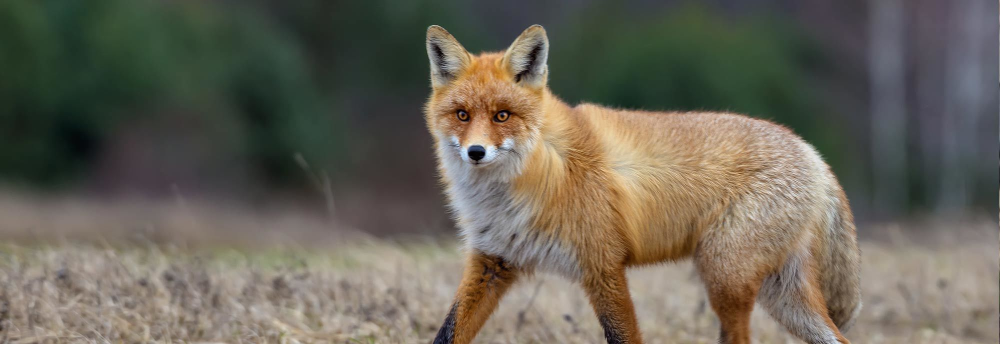

Fox
Foxes are small to medium-sized mammals belonging to the Canidae family. Recognizable by their pointed snouts, triangular ears, and bushy tails, they display a range of colors, from red and gray to brown and white. Renowned for their adaptability, foxes inhabit diverse habitats worldwide, including forests, grasslands, mountains, and even urban areas. Their omnivorous diet encompasses small mammals, birds, insects, fruits, and scavenged resources. Foxes are celebrated for their intelligence and cleverness, often depicted as cunning tricksters in folklore. Solitary creatures, they communicate through vocalizations like barks and yips. Across cultures, foxes have held symbolic significance, embodying traits like adaptability and intelligence. While some species face conservation concerns due to habitat loss, foxes as a whole persist as captivating and adaptable members of the animal kingdom.